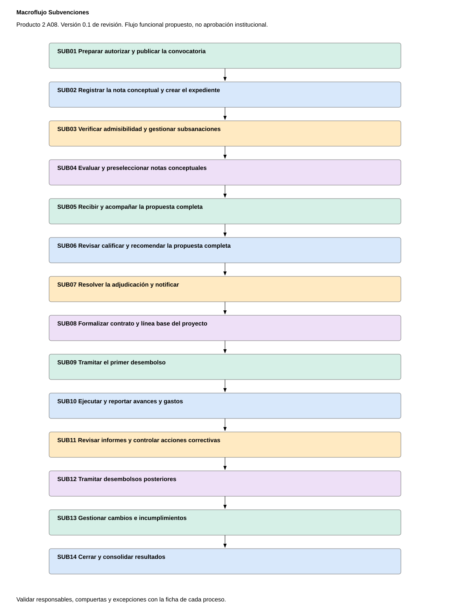
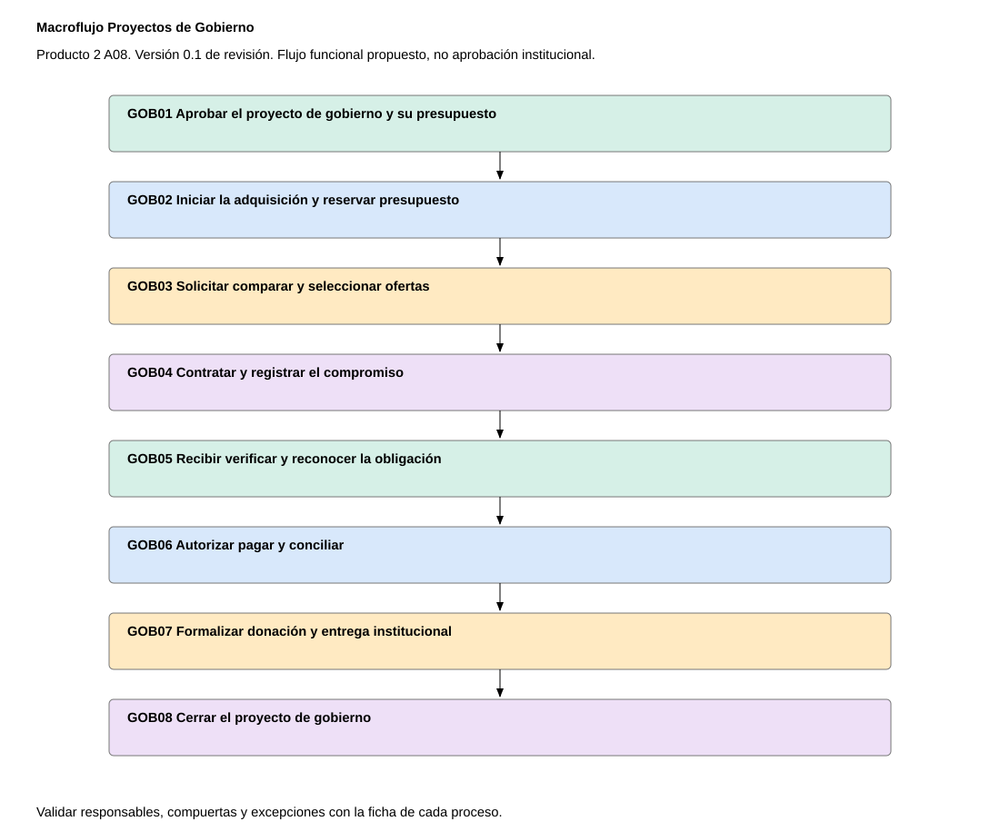
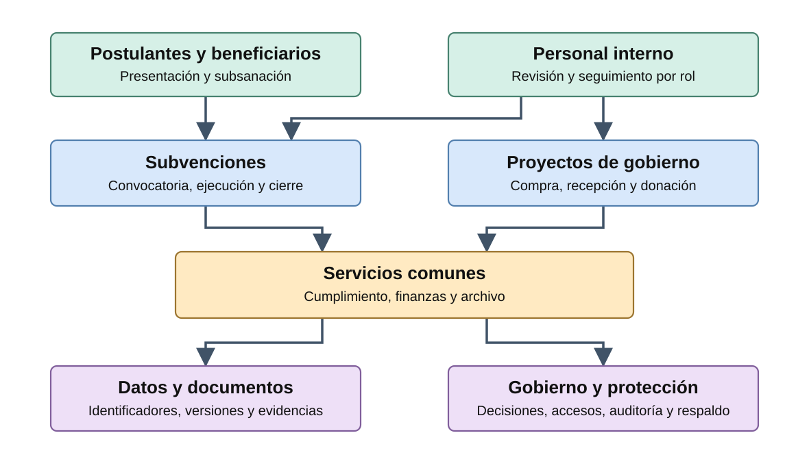
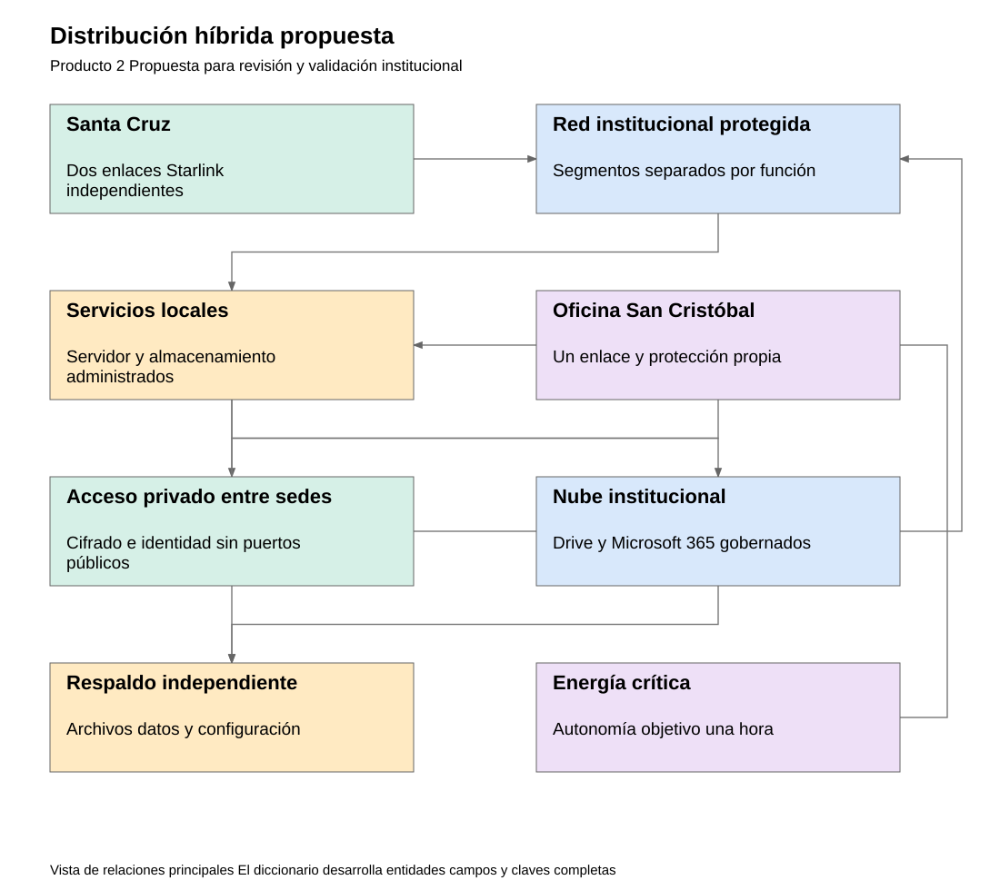
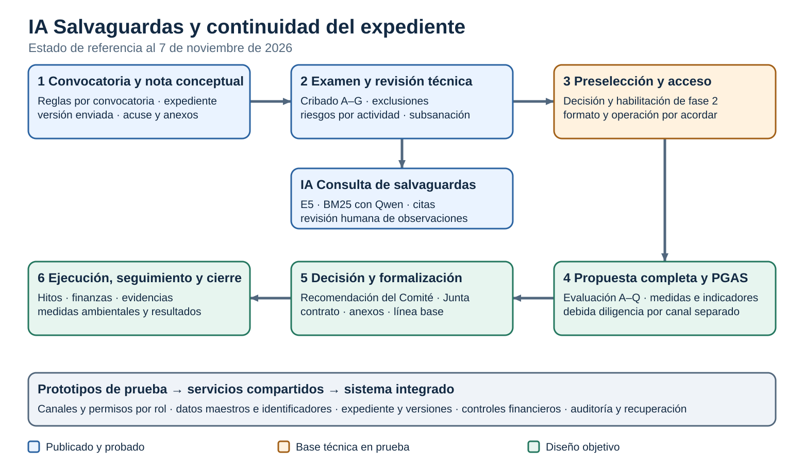
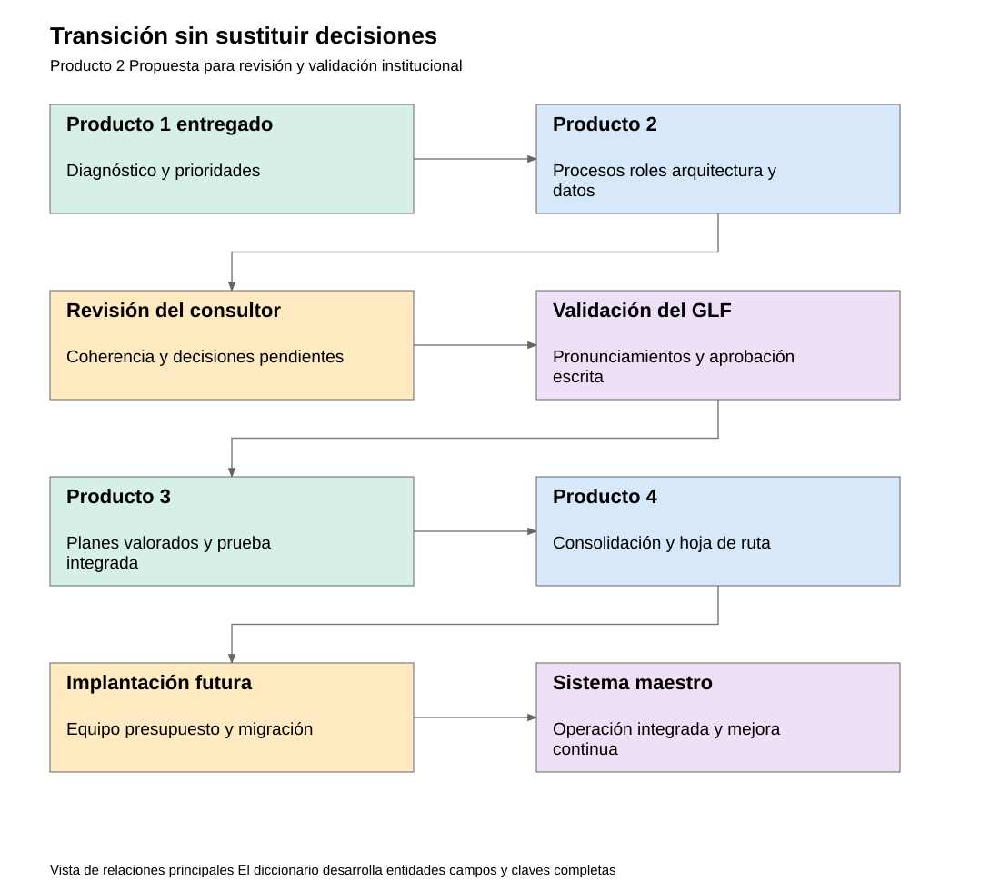
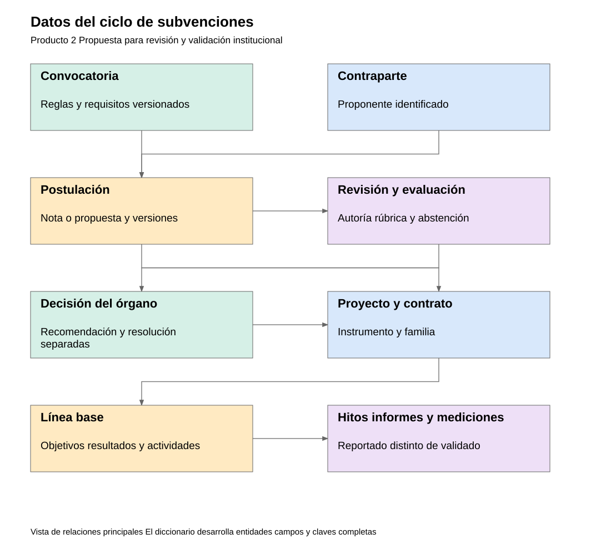
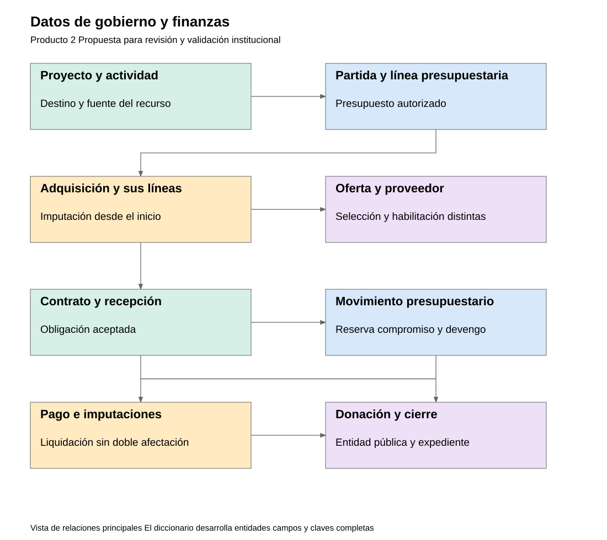
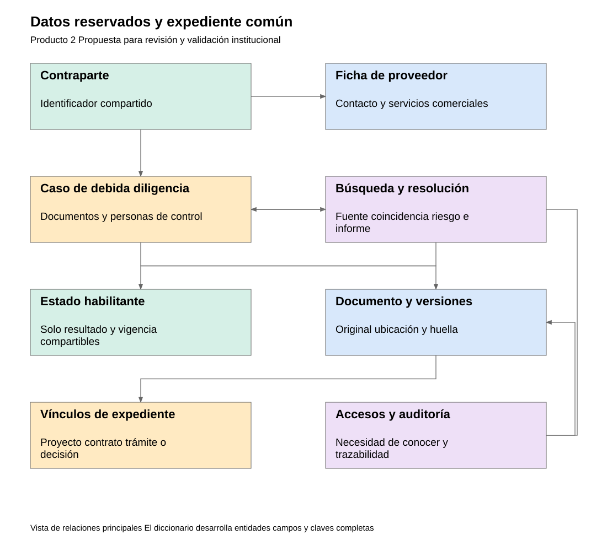

9 entregables
- Criterios de diseño y priorización
- Modelo de procesos objetivo
Ver modelos gráficos
Anexos editables
- Matriz de roles y gobierno
Anexos editables
- Arquitectura tecnológica objetivo
- Informe técnico de evaluación de Qualtrics
Ver modelos gráficos
Anexos editables
- Modelo y diccionario de datos
Ver modelos gráficos
Anexos editables
- Especificación integrada de requerimientos
Anexos editables
- Taxonomía documental y nomenclatura
Anexos editables
- Calendario de obligaciones y alertas
Anexos editables
- Catálogo de indicadores de impacto
Anexos editables
- Informe de la primera capacitación
Modelos gráficos
Selecciona un esquema para ampliarlo o descargar su archivo original.
Procesos objetivo

Ampliar
Macroflujo de subvenciones
Recorre la convocatoria, la nota conceptual, la propuesta completa, la adjudicación y el seguimiento hasta el cierre.

Ampliar
Macroflujo de proyectos de gobierno
Muestra la aprobación presupuestaria, la compra, el pago, la entrega por donación y el cierre del proyecto.
Arquitectura tecnológica

Ampliar
Arquitectura funcional
Relaciona a postulantes y equipos internos con los módulos de proyectos, los servicios comunes y los controles.

Ampliar
Distribución híbrida
Ubica los servicios locales, la conexión entre Santa Cruz y San Cristóbal y los servicios en la nube.

Ampliar
Ciclo y arquitectura de IA Salvaguardas
Sitúa la inteligencia artificial en la consulta de salvaguardas y muestra cómo continúa el expediente a lo largo de la evaluación.

Ampliar
Transición de arquitectura
Muestra la secuencia del diagnóstico y el diseño hacia la validación, la prueba integrada y la implementación futura.
Modelo y diccionario de datos

Ampliar
Datos de subvenciones
Vincula la convocatoria, las postulaciones, las evaluaciones y decisiones con el proyecto, sus hitos y mediciones.

Ampliar
Datos de gobierno y finanzas
Relaciona las partidas presupuestarias con adquisiciones, proveedores, compromisos, pagos y donaciones.

Ampliar
Datos de cumplimiento y documentos
Distingue los datos reservados de debida diligencia de los estados compartibles y los vínculos del expediente.